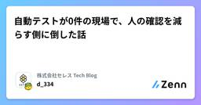
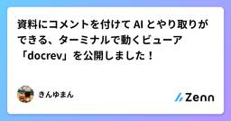
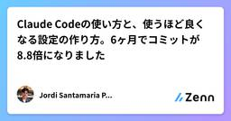
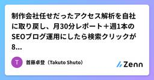
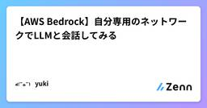
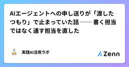
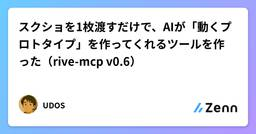
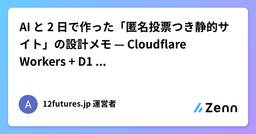
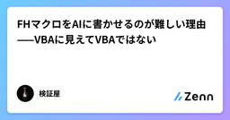

Zennの「Claude」のフィード
フィード

Fable 5.1の値下げはキャッシュ読み出し1/4だけ Claude Code104項目の内訳
Zennの「Claude」のフィード
2026年9月1日、Anthropicは新しいモデルClaude Fable 5.1とMythos 5.1を発表しました。ただ、この日に本当に動いたのは「賢さ」ではなく「値札」と「権限」でした。同じ日にClaude Codeが104項目のアップデートを出したこともあり、大型リリースの日という見方もありますが、中身を数えると印象は変わります。この記事では、公式発表・公式ドキュメント・Claude CodeのCHANGELOGという一次情報だけを根拠に整理します。数字は「公式開示」「申告値」「第三者実測」「番組の集計」の4種類に分け、混ぜて優劣を語ることはしません。https://you...
9時間前

バイブコーディングで GUI が壊れていく理由とその対策プロンプト 73
73
Zennの「Claude」のフィード
TLDLAIに常駐アプリの画面を作らせる際は以下の指示を出します。この指示をそのまま伝えてみてください。すべてのコンポーネントを Root の配下に置き、各コンポーネントは MVP パターンの Passive View として描画に関わるパラメータだけを操作し、動作は Chain of Responsibility でイベントをバブリングさせて、ステートマシンとして振る舞う Mediator に裁定させること。この指示を出してAIに作業させれば扱いやすい構造になります。ただし事前にテストを用意しておく必要はあります。 はじめに私が開発している「CooSenpAI」...
11時間前

Claude Codeで実行してほしくないコマンドには代替手段を伝える
Zennの「Claude」のフィード
こんにちは、K@zukiです。Claude Codeに作業を任せていると、permissions.denyなどで禁止しているコマンドに当たった後、別の書き方を試してまた止まったり、「ユーザーに拒否された」と報告して作業そのものをやめたりすることがありました。その場で自分が止めたわけではなく、あらかじめ設定したルールに当たっただけです。ファイルを書き換えるならEditツールを使ってほしい、といった代替手段はこちらで分かっています。そこで、コマンドを禁止しつつ理由と次に使ってほしい操作を一緒に返すようにしました。実装の経緯とルールの変遷は会社ブログに書いています。この記事では、Pre...
15時間前
Claude Code Meetup Japan #7 参加レポート
Zennの「Claude」のフィード
はじめに2026年8月28日に開催された「Claude Code Meetup Japan #7（Claude Code祭り!）」に参加してきました。今回は各セッションの概要や、特に印象に残ったセッションについての感想を書いていきたいと思います。https://aid.connpass.com/event/402949/ Claude Codeの体系的な理解と知識のフック（Oikonさん）Tipsはすぐ古くなる（HTMLレポート作成、tmuxセッション連携など、公式機能として実装される）Claude Codeは直近1年で311回リリース、240日は何かしらの更新...
16時間前

自動テストが0件の現場で、人の確認を減らす側に倒した話
Zennの「Claude」のフィード
壊したことを自動検知できない環境で、AIにどこまで任せるか。10年以上動いているWebサービスの開発フローを、今期まるごと作り直しました。目標は開発速度を前期比2倍。担当しているプロダクトに自動テストは1件もありません。その状態で、人の確認を増やす側ではなく、減らす側に倒しました。!成功体験ではありません。結果はまだ出ていません。何をやって、その時点で何が分かっていなかったかの記録になります。 課題と打った手先に切り分けます。目標：開発速度を前期比2倍。速度の定義はチケット消化数環境：自動テストが0件。コードを壊しても検知されない方針：人の確認を置く場所を絞った。...
17時間前

サブエージェントは 3,093 件のツール結果を読み、親には 1 件も渡さない — だから報告は裏取りするしかない
Zennの「Claude」のフィード
3行でログ 389 ファイルから委譲 138 件を取り出した。サブエージェントは 1 回の委譲あたり中央値 20 回ツールを呼び、合計 3,093 件のツール結果を読んでいた。親に返るのは 中央値 1,151 字の文章 1 つだけ。読んだツール結果は 0 件が親に届く。サブエージェントが書いた本文 530,652 字のうち、親に届いたのは 55.0%。残りは親が見ることのないまま消える。 委譲は「文脈を汚さない」ための仕組みだサブエージェントに仕事を渡す理由ははっきりしている。大量のツール出力を親の文脈に入れないためだ。100 ファイルを探させて、結論だけ受け取る。...
19時間前

資料にコメントを付けて AI とやり取りができる、ターミナルで動くビューア「docrev」を公開しました！
Zennの「Claude」のフィード
ターミナルで Excel や Markdown のファイルを開き、セルや行にコメントを付けると、Claude Code などの AI エージェントがそれを読んで対応し、返事をくれるツール docrev を公開しました。https://github.com/kaneko1117/docrevこの記事では、docrev が何をするものか、なぜ作ったのか、どう使うのかを紹介します。 docrev とはdocrev は、ドキュメントに付けたコメントを通して、人と AI がやり取りするためのビューアです。コードの変更点にコメントを付けて直してもらう「コードレビュー」を、Excel や...
20時間前

人間と話すのと変わらない。gpt-live-1 に Claude Agent SDK を挿して、声でコーディングエージェントを動かした
Zennの「Claude」のフィード
はじめにこんにちは。FLINTERSの河内です。社内で毎週開いている AI 活用の勉強会で、今回（2026-09-14）は私が担当でした。取り上げたのは、9 月 10 日に API 公開された OpenAI の GPT-Live-1 です。ChatGPT の音声モードの裏で動いていたモデルが API から使えるようになったので、熱いうちに触っておこうと、週末に Claude Agent SDK と繋いで動かしてみました。私は ChatGPT と音声通話をしながら料理をすることがあります。「次は何」「分量はどれくらい」と聞きながら手を動かせるのは、画面を見られない状況ではっきり便...
20時間前

Claude Codeの使い方と、使うほど良くなる設定の作り方。6ヶ月でコミットが8.8倍になりました 1
Zennの「Claude」のフィード
この記事で、何ができるようになるかClaude Codeを6ヶ月、毎日使って分かったことを1本にまとめたものです。コピーして使う設定集ではありません。 むしろ逆で、他人の設定は効かない、という話をします。読んで、そのとおりにやると、同じClaude Codeがこう変わります。返ってくる答えの精度が上がります。 Claude Codeが何を覚えていて何を忘れるのかが分かると、必要な情報の渡し方が決まるからです出した指示が、守られるようになります。 同じ一行でも、CLAUDE.mdに書くかフックにするかで守られる確率が変わります同じ失敗が、二度目で消えます。 詰まった瞬...
20時間前

制作会社任せだったアクセス解析を自社に取り戻し、月30分レポート＋週1本のSEOブログ運用にしたら検索クリックが8倍になった
Zennの「Claude」のフィード
この記事について食品・ホスピタリティ系の会社で、EC・Webマーケティングと社内システム開発をひとりで兼任しています。グループ会社である**多店舗展開の飲食チェーン（大分県内に約15店舗）**のWeb集客を、次のように立て直した記録です。アクセス解析：制作会社に預けっぱなしで社内の誰も見ていなかったGA4/Search Consoleを自社に取り戻し、**毎月CSVを3枚エクスポートしてClaudeに貼るだけ（約30分）**で「月次レポート＋翌月のブログネタ」が出る運用にしたSEOブログ：そのネタをもとに、週1本・約35分でブログを下書き→現場が加筆→公開する半自動サイク...
21時間前

Slackに一言で企業Instagramの投稿案が10件出る仕組みを、AWSサーバーレス×Claudeで作った
Zennの「Claude」のフィード
この記事について専門の開発部署がない食品・ホスピタリティ系の会社で、EC・Webマーケティングと社内システム開発をひとりで兼任しています。その片手間で回していた企業Instagramの運用を、「Slackにひとことメッセージを送ると、AIがNotionの情報を参照して月10件の投稿案を下書きしてくれる」 仕組みに置き換えました。入力：SlackでBotに「9月の投稿案を作って」とDM処理：AWS Lambda上のエージェントがNotionの複数DBを読み、Claudeで投稿案を構造化生成出力：投稿ドラフトがNotionに10件保存され、Slackに完了通知この記事...
1日前

アナログ派のDB初心者が2日でDP900に受かった 赤シート×Claude勉強法
Zennの「Claude」のフィード
前談AI分野の技術躍進すさまじく、デジタル化なんて当たり前のこのご時世、趣味で紙の辞書を引きつづけている者です。(子どもの頃からの習慣でかなり慣れているので、意外とウェブやAIでいちいち検索するより辞書引くほうが楽だったりします)もちろん書籍もだんぜん"紙派"。電子だとなんだか、私の場合、忘却曲線の傾きが大きいといいますか、数ヶ月後、数年後にぜんぜん頭に残らないのです。そんなアナログ派の私ですが、AI活用も大好きです。とくにClaudeが好きで、休日朝から晩までClaudeとやりとりしている日もザラにありますし、QOLを上げるための普段使いスキルをいろいろ作って便利に暮らしてお...
1日前

【AWS Bedrock】自分専用のネットワークでLLMと会話してみる
Zennの「Claude」のフィード
!この記事にはAWSアーキテクチャに関する話が出てきますが、「いや、そもそも社内ネットワークを作って（この場合は自分専用ネットワーク）その中にアプリもおいて作業すればよかったのでは？」と言ったそもそも論ツッコミポイントが複数あると思いますが、それは初学者ということで多めに見てやってください🙇 何を作ったか自分専用のアプリからAWS Bedrockへアクセスし生成AIとやり取りする環境を作った。それも自分だけがBedrockへアクセスできる、そんな環境を。 なぜ作ろうと思ったか結論気になったから。というのが理由ですが、それだと「何が？」なのでもう少し詳しくいうと、私は今A...
1日前

AIエージェントへの申し送りが「渡したつもり」で止まっていた話 ── 書く担当ではなく通す担当を直した
Zennの「Claude」のフィード
前回の記事(AIエージェントに「社内用語禁止」を守らせる)の最後で、「複数のAIエージェントをまたいで運用しているときに起きた、渡したはずの申し送りが実は読まれていなかった話を書く」予定でした。今回はその話です。 何に困ったか前回、担当ごとのAIエージェントに共通ルールを守らせるために、「参照だけの案内」をやめて「繰り返し出た言葉は本文に直接書き写す」という形に変えました。これで会話で使われる言葉の違和感はかなり軽減できました。ところが、また別の問題に直面。新しく決めたことが、実際に手を動かす担当の指示ファイルに反映されないまま放置されるというものです。具体的には次の2つが発...
1日前

スクショを1枚渡すだけで、AIが「動くプロトタイプ」を作ってくれるツールを作った（rive-mcp v0.6）
Zennの「Claude」のフィード
スクショを1枚渡すと、AIが要素を検出して、入場アニメとホバー・プレス付きの「動くプロトタイプ」を作ってくれる——そんなツールを個人開発で作りました。エディタ不要、ローカル完結、無料です。正体は Rive というインタラクティブアニメーション形式向けの MCP サーバー（rive-mcp-server）で、Claude などの AI アシスタントから使います。今回の v0.6 の目玉は 2 つです。UI スクリーンショット 1 枚 → 入場アニメ・hover/press つきの .riv（riv_ui_detect → riv_ui_prototype の 2 コール）SVG...
1日前

【2026/8/10】Sonnet 5の値上げが撤回。tokenizerのせいで実質コストはOpus超えという実測も
Zennの「Claude」のフィード
3行まとめClaude Sonnet 5は「$2/$10 per MTok」の導入価格を8月31日までとし、9月1日から旧世代と同じ「$3/$15」に戻す予定だった。だが2026年8月10日、Anthropicはこの値上げを撤回し、$2/$10を恒久価格にすると発表した単価は下がったままだが、前回リリース時にも書いた新トークナイザの影響は解消していない。同じテキストが旧世代より約3割多くトークンを消費するため、単価と実コストは別物という状況は変わらない独立系の実測では、Sonnet 5の1タスクあたりコストが平均$2.29となり、上位モデルのOpus 4.8（$1.97）を上...
1日前

AI と 2 日で作った「匿名投票つき静的サイト」の設計メモ — Cloudflare Workers + D1 + Access
Zennの「Claude」のフィード
『LIFE 3.0』（マックス・テグマーク）の第 5 章にある「超知能後の 12 のシナリオ」を 1 枚の分岐図にして、読者が「望む未来」と「来そうな未来」に投票できるサイトを作りました。👉 https://12futures.jp/サイトの中身の話は別の場所に書くとして、この記事は作り方と設計判断の記録です。個人開発で、コードはほぼすべて AI（Claude）に書かせ、私は要件と判断と「OK」だけを出す、という進め方をしました。同じ構成で何か作りたい人と、「AI にどこまで任せられるのか」を知りたい人向けに、うまくいったところと、事故ったところを両方書きます。 要件最初に決め...
1日前

FHマクロをAIに書かせるのが難しい理由——VBAに見えてVBAではない
Zennの「Claude」のフィード
オムロンFHシリーズの画像センサには、マクロカスタマイズという機能がある。計測の前後に自分で処理を書き足せる仕組みで、文法はVBAによく似ている。Dim で変数を宣言し、Sub で手続きを書き、If ... Then ... End If で分岐する。だからAIにFHマクロを書かせると、VBAとして自然なコードがすらすら出てくる。問題は、そのVBAとして自然なコードがFHでは動かないことがある点だ。FHマクロは見た目こそVBAだが、中身はオムロン独自仕様で、使える関数もVBAとは別物になっている。AIはこの「見た目と中身のずれ」に引っかかる。この記事では、なぜFHマクロがSTより厄介な...
1日前

Claude Codeに会社を経営させて30日。売上は0円だったが、1つだけ面白い数字が出た🏢
Zennの「Claude」のフィード
!これは実験の記録ではなく、いま進行中で、うまくいっていない記録です。売上は0円、タスク完了率は37.5%です。数字は全部そのまま載せます。（載せたくないですが…） やったこと1つのディレクトリを「会社」に見立てて、Claude Codeに経営させています。grow/├── CLAUDE.md # 憲法。目的・禁止事項・判断の順序├── docs/ # 会社概要・自分の分析・組織定義・運営ルール├── records/ # ★ 唯一の記憶│ ├── kpi.md│ └── decision_...
1日前

Google Chat × Claude Agent SDK × AWS Lambdaで「事業部向けのAIエージェント」を作った話
Zennの「Claude」のフィード
はじめにこんにちは、塚本です。弊社では、自社で管理しているコンテンツ（商品データ）を、提携先の企業（クライアント）へ届ける業務を「納品」と呼んでいます。この納品という、商材を外部へ届けて売上を上げるビジネスは、会社の設立当初から続いている歴史の深いものです。その分、蓄積されてきた業務知識は幅広く複雑で、しかも新しい施策も頻繁に発生するため、人がすべてを吸収しきるのは簡単ではありません。社内には、この納品業務まわりのシステムを日々使っている事業部の方（非エンジニア）がいます。事業部の方から「この処理どうなっていますか？」「こういった施策をしたいのですが、どのくらい工数がかかりそう...
1日前